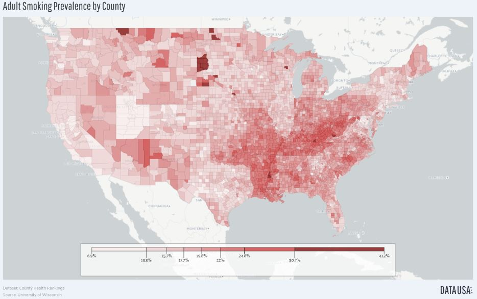
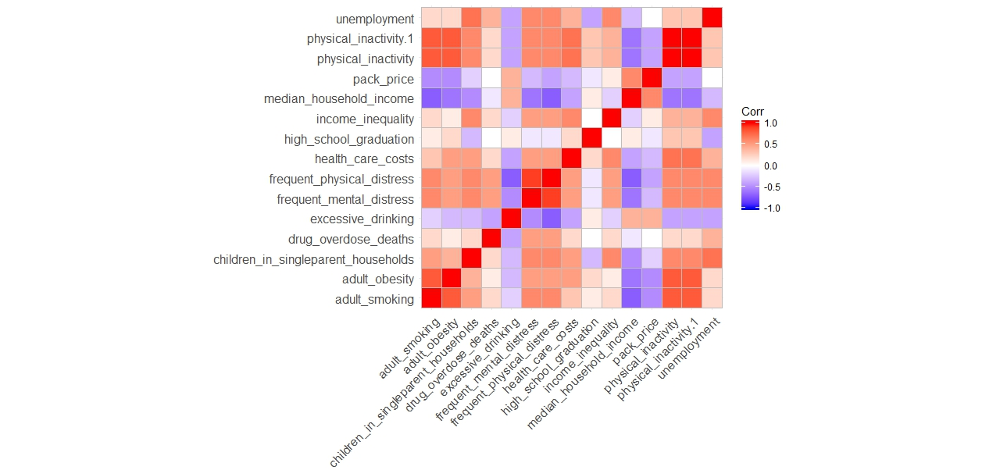

Health Risk Tobacco Trends
Review of the Adult Smoking Rate mapped by County in the United States reveals and interesting story. Extreme variances exist across the country, yet dramatic differences occur in neighboring counties and states. Looking at the map, you can see imagine the outlines of the states of Missouri and Illinois as reflected by the variance at the county level. Is there more to this story?

This is a heat map of the correlation coefficients of the selected variables under investigation. Hot red indicates a strong relationship (a correlation of 1 or -1). Cool purple represents a weak relationship (a correlation of zero).

It has been theorized that Alcohol and Tobacco are complements, with usage rates connected. Mapping the data indicates, though, that in many of the areas where Adult Smoking Rates are relatively high, Excessive Alcohol Consumption is relatively low. A closer look of at the south reveals almost this to be true in almost state, except Louisiana, which is relatively high in both. Adult Smoking Rate is reflected in RED, Excessive Alcohol Consumption in PURPLE.